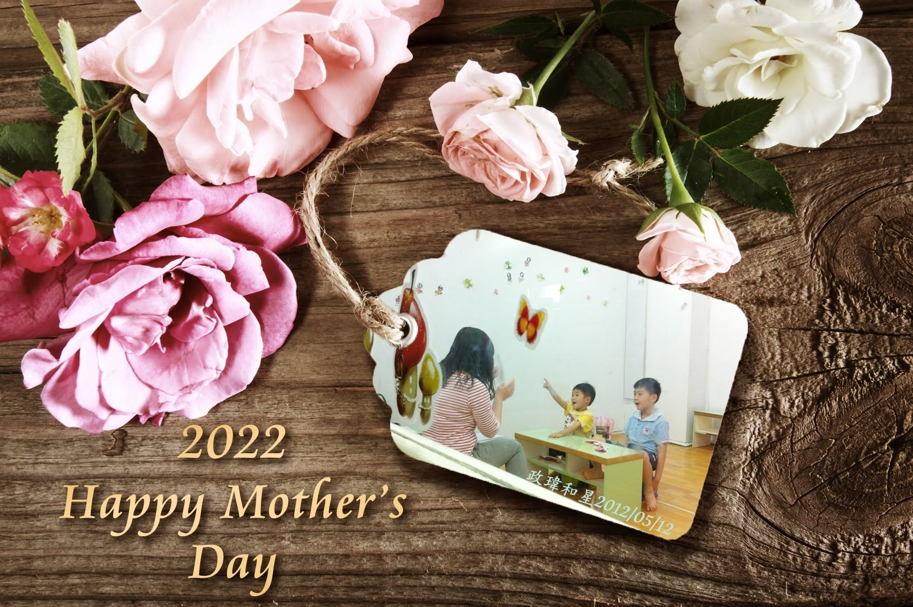

〔❤️最好的母親節禮物❤️，S101/S102/FS學員 政瑋 考取附中科學班〕
在政瑋5歲的時候，我就認識了星媽了，當時我只知道星媽是個家庭主婦。多年後，一次偶然的機緣，又再次重逢，那次的對話是我們是不是認識？妳的小孩是不是叫星星？妳記得我們孩子曾一起去上日文課嗎？終於喚起星媽的記憶了（當時星媽的反應是:我們不可能認識，你是不是認錯人了？妳怎麼知道我的孩子叫星星？）
政瑋排行老大，我從小就是個照書養的標準媽媽，遇到孩子的教養問題，我第一時間就是找書翻書，自己去摸索如何給孩子適合的環境，問問周遭的親友，如何處理某些狀況。喜歡探索的政瑋，我們在不同時間點也安排學習活動，像幼兒潛能啟發、疊杯、圍棋、奧福音樂、美勞、鋼琴、動力機械積木、魔術方塊、做標本、版畫、自然實驗課……等，很多老師也給了很多不同的想法，讓我也慢慢更了解孩子的特質。
在重逢的日子，總是跟星媽取經孩子的教養問題，這幾年多虧了星媽，一步一步的規劃，讓政瑋去嘗試某些部分，政瑋從小四開始，去參加一些數學競賽、數學培訓營，雖然成績不如預期，但很神奇的是政瑋竟然都不排斥，反而得到許多學習的動力，另類的收穫。後來，星媽告知未來國中的資訊，於是小六就去參加土城國中的考試，接著參加新北市數資班的初試及複試，政瑋很順利考上數資班，若不是星媽給我指引，文組媽媽還不知道如何安排理科孩子，可能還要走很多冤枉路。
後來，星媽成立了獵豹數學FB，問問我有沒有興趣讓政瑋加入，在這過程中，我去聽了宗翰老師的講座，真得讓我有很多感觸，例如:政瑋從小接觸奧福音樂到學鋼琴，我就發現他很喜歡小豆豆，對音符很有興趣，尤其是樂理這部分，有種邏輯思維，小五上音樂課時，某天音樂老師突然問政瑋要不要加入合唱團，後來發現政瑋對於樂譜有超強記憶力。政瑋小時候很喜歡去Babyboss當考古學家、太空人，很多天馬行空的想法。宗翰老師也說很多文組媽媽數學不怎麼樣，但往往孩子數學都很厲害，我們家就是這種典型的例子。
聽了宗翰老師的講座，當下馬上跟星媽報名，在獵豹老師團隊的帶領下，參加1001、8001、S101、S102課程，坦白說很不輕鬆，但政瑋始終興趣滿滿，開拓孩子對數學的視野，一堂課可能只聽懂一半，卻澆不熄孩子對數學的熱情，反而激發孩子更多的探索，獵豹優質團隊打造了不一樣的學習環境，學得深也學得廣，基礎打得穩，滿足政瑋的好奇心，激發出孩子的潛能。
在政瑋考上國中數資班後，星媽就有建議讓政瑋國九去試試科學班，我們就以未來科學班當做目標，在星媽的規劃下參加一系列的獵豹數學課程。後來政瑋報考附中科學班過了初試，也很開心跟星媽分享，複試這一關，讓我備感焦慮，星媽很正向鼓勵告訴我，政瑋是個很努力的孩子！不管複試結果如何，他一定會越來越好，越來越進步！政瑋在複試這一關，坦白說真得很辛苦，但也熬過去，真得如願讓他考進師大附中科學班。
感謝獵豹團隊所有的老師，感謝星媽是政瑋的恩人，未來科學班的路還有許多挑戰，政瑋最近報名獵豹S111的課程，未來還要繼續努力學習，就如同宗翰老師所說的，不要小看自己的孩子，打破現有的教育框架，其實台灣孩子的數學實力很不錯，只是大家資訊太少，感謝宗翰老師的獵豹團隊及星媽的堅持與努力，謝謝您們的付出。
政瑋媽咪
10年前認識政瑋，後來再相遇，一直保持著聯繫，政瑋媽媽相當用心於孩子教育，記得國七時AMC8成績讓媽媽很焦慮，也詢問我許多建議，日前媽媽來跟我報喜，政瑋考取附中科學班，成為獵豹第一批學生中幾位考上科學班的學生之一，實在很令人欣慰！從一開始參與課程覺得困難，但是興致盎然越來越努力，這一路來進步很多，更難能可貴的是政瑋的學習態度！
今天是母親節，看到政瑋媽媽和大家分享在獵豹的學習心得，我找出政瑋和星一起的照片，剛好是十年前母親節週末拍下的。我想，政瑋如願考進科學班，就是給媽媽最好的母親節禮物了！
也祝福社團中所有媽媽，母親節快樂！🥰
